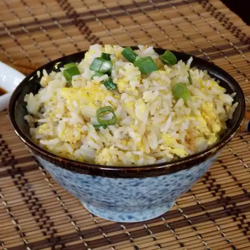

Breakfast Rice from Japan

Description
This breakfast rice recipe is quick to make and delicious. I learned it from friends in Tokyo. You can use chilled white or brown rice. Adjust the amount of ingredients for your hunger needs!
Ingredients
- 1 teaspoon vegetable oil
- 1 cup cold cooked rice, or more to taste
- 1 egg, or more to taste
- 2 green onions, sliced, or more to taste
- 2 teaspoons soy sauce, or to taste
Steps
- Heat oil in a large skillet over medium-high heat. Spread rice in a flat layer in hot oil; cook until crispy on the bottom, 2 to 3 minutes.
- Stir egg into rice until scrambled, about 2 minutes more. Sprinkle green onions on top and season with soy sauce.